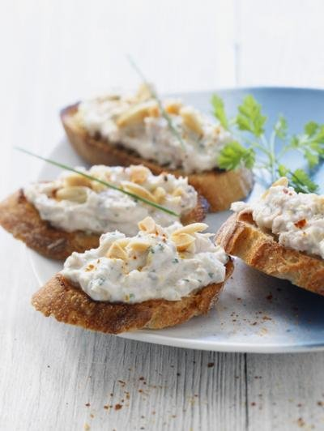

Tartinades au Saint Moret
Ingrédients
×
- Saint Moret
- 200 g de thon
- 1 échalote
- 1 citron
- ciboulette

Préparation
Étape 1
Mélanger du Saint Moret avec 200 g de thon, 1 échalote hachée, le jus d’1 citron et de la ciboulette.
Conseils
- Sardine : remplacer le thon par 1 boîte de sardines.
- Tomates séchées : tomates séchées, 1 échalote, basilic.
- Chorizo : 60g de chorizo, 3 cas de sauce tomate, basilic, paprika.
Résumé
Saint Moret
200 g de thon
1 échalote
1 citron
ciboulette
Mélanger